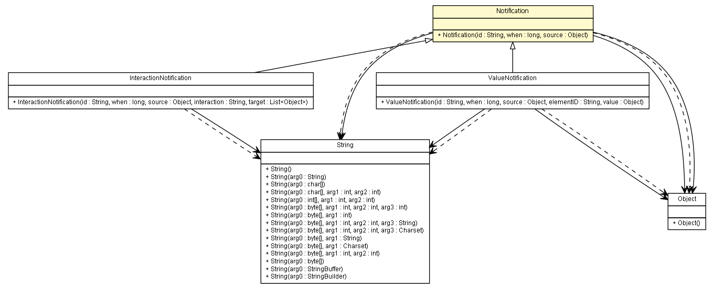

es.upm.dit.gsi.shanks.notification
Class Notification

java.lang.Object
 es.upm.dit.gsi.shanks.notification.Notification
es.upm.dit.gsi.shanks.notification.Notification
- Direct Known Subclasses:
- InteractionNotification, ValueNotification
public abstract class Notification
- extends Object
From time to time the user may want to use data generated by the simulation,
to analyze and take conclusions.
A notification is a trace left by interactions of agents, elements and the
environment. This trace can be consulted on simulation time or at the end
of it.
There is two types of notifications in SHANKS. Both of them extends from this
interface. A raw notification is defined by 3 parameters.
- An unique identification id
- An integer that indicates the step number when the event was trigger.
- A source, that indicates the element of the simulation that is responsible
for this notification.
- Author:
- darofar
| Methods inherited from class java.lang.Object |
clone, equals, finalize, getClass, hashCode, notify, notifyAll, toString, wait, wait, wait |
Notification
public Notification(String id,
long when,
Object source)
- Parameters:
id - when - source -
getId
public String getId()
- Returns:
- the Notification ID
getSource
public Object getSource()
- Returns:
- the source object that originates the notification.
getWhen
public long getWhen()
- Returns:
- the step number in which the notification was created.
getTarget
public Object getTarget()
- Returns:
- the target
Copyright © 2011-2013 Grupo de Sistemas Inteligentes - Universidad Politécnica de Madrid. All Rights Reserved.